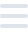

Sobre mim
Sou um aficionado por tecnologia e inovação, com experiência em liderança de equipes e resolução de problemas. Atualmente, estou me dedicando ao desenvolvimento web, com foco em HTML, CSS, JavaScript e React. Sou formado em Educação Física e Direito, e estou cursando Análise e Desenvolvimento de Sistemas. Meus hobbies incluem leitura, música e esportes.
Formação
Licenciatura Plena em Educação Física
Universidade do Estado do Pará
1998 - 2002
Direito
Faculdade Estácio do Pará - Estácio FAP
2012 - 2016
Análise e Desenvolvimento de Sistemas
Faculdade VINCIT
Previsão de conclusão - Dez / 2025
Experiência
Encarregado Operacional
OS Pará 2000
2020 - 2021
Como encarregado operacional, era responsável por organizar as atividades dos caixas do Parque Zoobotânico Mangal das Garças, exercendo função de liderança nos trabalhos diários, auxiliando no atendimento ao público e solucionando problemas que pudessem interromper os serviços de acesso ao parque.
Desafios ONE
Oracle Next Education T6
2023 - 2024
Os desafios de códigos do programa One, eram os projetos de aplicação prática dos conhecimentos adquiridos sobre HTML, CSS, JavaScript e React.
NLW Jorney
Rocketseat
2024
Nessa edição do NLW da Rocketseat, criamos um planejador de viagens utilizando React, React DOM e Tailwind CSS.
NLW Connect ReactJS + NodeJS
Rocketseat
2025
Fundamentos do React, Fundamentos do Next.js, padrão de composição de componentes, estilização com Tailwind, roteamento com App Router, Server Components, Client Components, formulários com React Hook Form, criação de cliente HTTP com Orval, configuração de toolchain com Biome, validação com Zod, tipagem com Typescript. Além do Desenvolvimento de uma aplicação back-end em Node.js, aplicando dos conceitos de API REST, utilizando TypeScript, Fastify como framework, integração do Drizzle ORM, Docker para lidar com serviços de PostgreSQL e Redis, Zod para validação de dados e documentação com Swagger.
Habilidades
Soft Skills
- Liderança
- Trabalho em Equipe
- Boa comunicação
- Organização
- Solução de problemas
Hard Skills
- HTML5
- CSS3
- Tailwind CSS
- JavaScript
- React